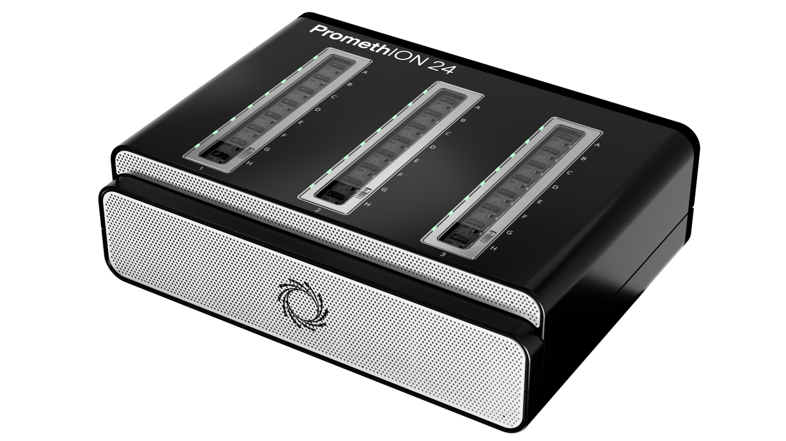
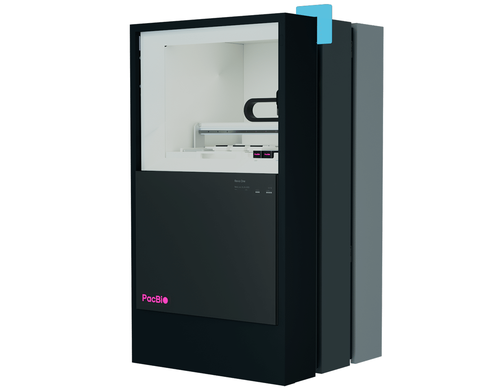
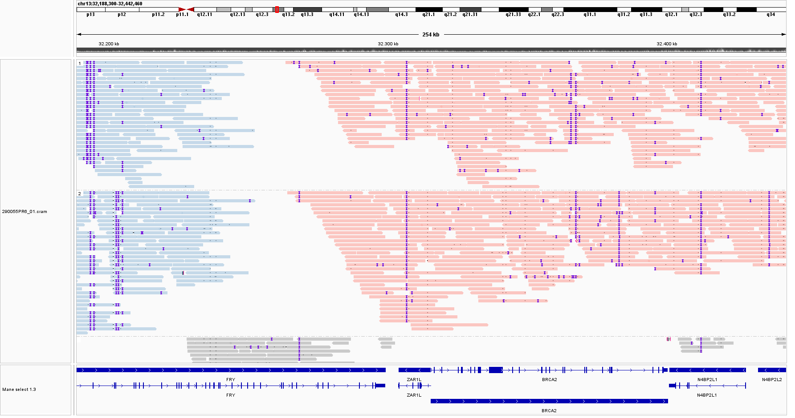
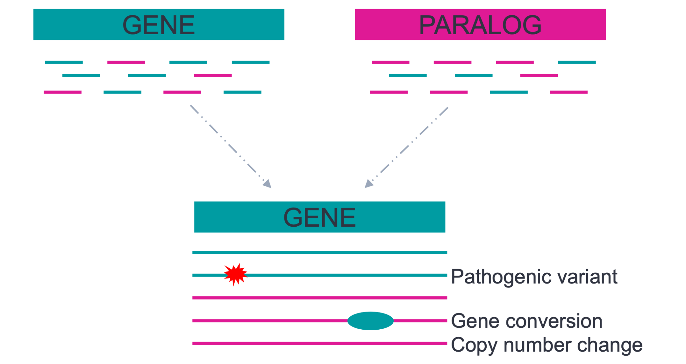

Long-Read Sequencing
Benedikt Schnur ![]()
2026-09-18
Quick-Facts


Benchmarks
Phasing

Abbildung 4: IGV Screenshot, PacBio HG001, BRCA2 (eigene Daten)
Paraphase4,5
- Long-Read-basierter Caller für hochhomologe Paraloge/Pseudogene (z.B. SMN1/SMN2, PMS2, CYP21A2, GBA)
- Realignment aller Reads einer Genfamilie auf ein Referenzgen, anschließend Phasing in Haplotypen
- Liefert Kopienzahlen, gephaste Varianten und Genkonversionen

Paper Empfehlung
Zheng, X., Sanio, P., Luo, R., Li, H. & Sedlazeck, F. J.
Bioinformatics for human long-read whole-genome sequencing
Nature Reviews Methods Primers 6, 70 (2026)6
References
1.
Mahmoud, M., Agustinho, D. P. & Sedlazeck, F. J. A Hitchhiker’s Guide to Long-Read Genomic Analysis. Genome Research 35, 545–558 (2025).
2.
Fu, Y., Timp, W. & Sedlazeck, F. J. Computational Analysis of DNA Methylation from Long-Read Sequencing. Nat Rev Genet 26, 620–634 (2025).
3.
megSAP/Doc/Performance.Md at 2026_06 · Imgag/megSAP. https://github.com/imgag/megSAP/blob/2026_06/doc/performance.md.
4.
Chen, X. u. a. Genome-Wide Profiling of Highly Similar Paralogous Genes Using HiFi Sequencing. Nat Commun 16, 2340 (2025).
5.
Chen, X. u. a. Comprehensive SMN1 and SMN2 Profiling for Spinal Muscular Atrophy Analysis Using Long-Read PacBio HiFi Sequencing. The American Journal of Human Genetics 110, 240–250 (2023).
6.
Zheng, X., Sanio, P., Luo, R., Li, H. & Sedlazeck, F. J. Bioinformatics for Human Long-Read Whole-Genome Sequencing. Nat Rev Methods Primers 6, 70 (2026).